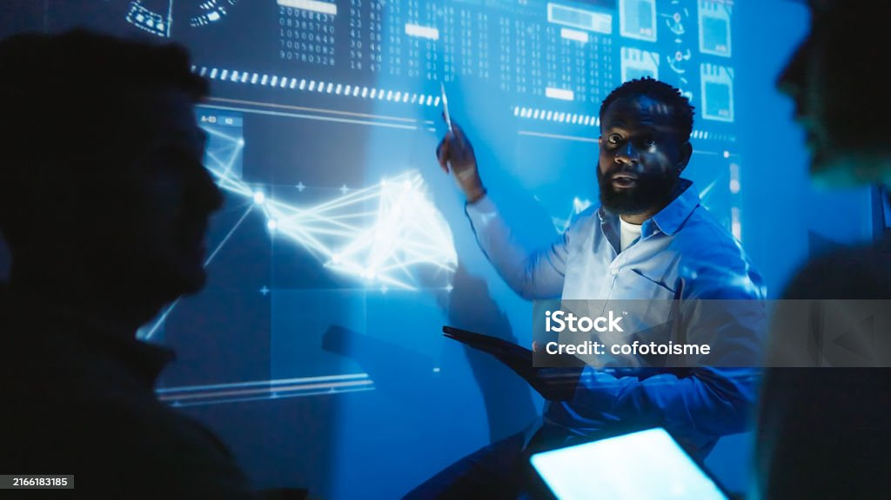

Hakkımda
Selam, ben Mert Hakan! 👋 Benim dünyam, büyük ve dağınık fikirleri alıp temiz, işlevsel kodlara dönüştürmek etrafında dönüyor. Ben sadece bir Bilgisayar Mühendisliği adayı değilim; sınırsız merak ve dijital şeyleri *çalışır* hale getirme arzusuyla hareket eden tutkulu bir üreticiyim. Mantık dilini akıcı konuştuğumu söyleyebiliriz, ama aynı zamanda akıcı yaratıcılık dili de biliyorum. 🧠✨ Burada gördüğünüz projeler—web uygulamalarından Blockchain'e yaptığım ilk dalışlara kadar—uykusuz gecelerin ve saf heyecanın bir sonucu. Onlar, lise birinciliğinden 🥇 bir sonraki büyük zorluğun üstesinden gelmeye hevesli bir geliştiriciye dönüşme yolculuğumu temsil ediyor. İnanıyorum ki en iyi çözümler, analitik düşüncenin tasarıma olan yetenekle buluştuğu yerde doğar (bu sitenin neden havalı parçacık efektlerine sahip olduğunu şimdi anladınız! 😉). Temel görevim mi? Yapay zeka (AI) ve dağıtık sistemler dünyasına derinlemesine dalmak, sınırları zorlamak ve karmaşıklığın bile güzel olabileceğini kanıtlamak. Ben buraya inşa etmeye, öğrenmeye ve bağlanmaya geldim. Masaya hem titiz detay hem de içten bir coşku getiren birini arıyorsanız, haydi konuşalım! 🚀
Temel Yetkinliklerim
- HTML5 & CSS3
- JavaScript
- Python
- Yapay Zeka (AI) Konseptleri
- Blockchain Konseptleri
Zaman Çizelgesi
Şu ana kadarki akademik ve kişisel gelişim yolculuğum.
Lise Birinciliği
Okulumdan 95.53 ortalama ile birinci olarak mezun oldum.
SAT Superscore: 1400
SAT sınavından 1400 superscore elde ettim.
Lise Okul Temsilcisi
Öğrenci kurulunu temsil etmek üzere seçildim.
[Olay Başlığı 4]
[Olay açıklaması... yer tutucu metin.]
[Olay Başlığı 5]
[Olay açıklaması... yer tutucu metin.]
[Olay Başlığı 6]
[Olay açıklaması... yer tutucu metin.]
[Olay Başlığı 7]
[Olay açıklaması... yer tutucu metin.]
[Olay Başlığı 8]
[Olay açıklaması... yer tutucu metin.]
[Olay Başlığı 9]
[Olay açıklaması... yer tutucu metin.]
[Olay Başlığı 10]
[Olay açıklaması... yer tutucu metin.]
Projelerim
Yeteneklerimi ve tutkumu gösteren çalışmalarım.


İletişime Geçelim
Projelerim ilginizi çektiyse veya sadece bir merhaba demek isterseniz...